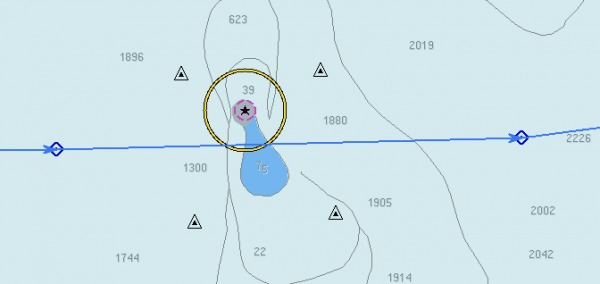
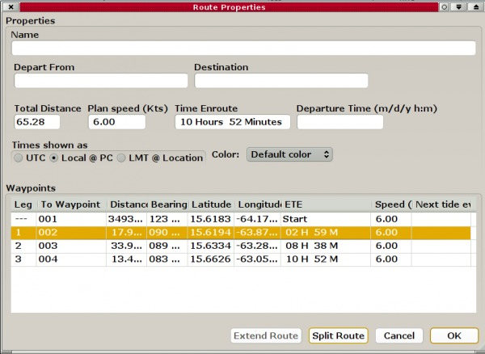
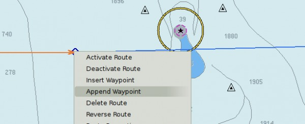
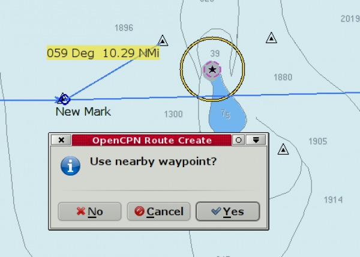
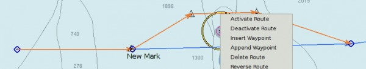
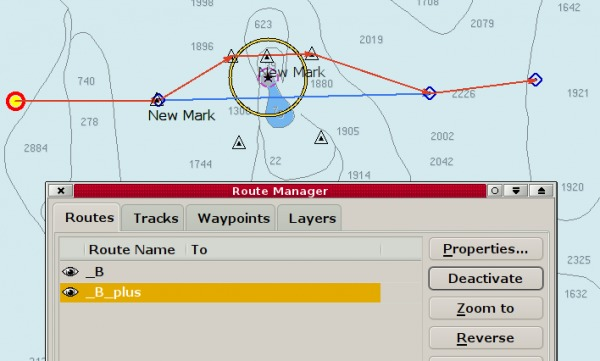
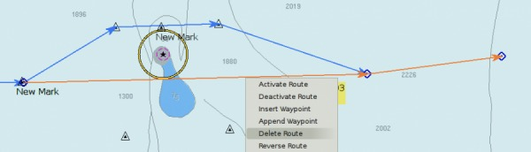
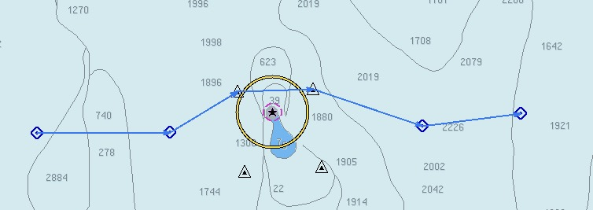

Using Routes
To include existing waypoints in a route
How to use split and extend - an example.

Hm…a bit of a miss in the planning. An islet with a shallow bank extending southward on our route. We put two marks north of the obstruction and would like to include these in our route.

The waypoint west of the islet is #2. We mark this in “Route Properties”, from the right-click menu. The Button “Split Route” is highlighted, meaning it is available to use. This is exactly what we want to do, so we click the button and split the route at wpt #2.

Right click at #2 and choose “Append Waypoint”,

Move the cursor to the first triangle, and answer yes to “Use nearby waypoint?”.
Then move the cursor to the second triangle , and answer yes to “Use nearby waypoint?”.
Same thing for the original wpt to the east of the islet.

Click “Activate Route” to see that this extension worked.

Once again mark “Route Properties” in the right-click dialog. #3 is the last wpt in our “new” temporary route. The “Extend Route” button is highlighted, so we click it.

Open the Route Manager to view the result. Notice the naming of the routes. _B_plus is active. What remains is to delete route _B and to rename _B_plus to a suitable name, for example the name of your original route.

Deleting route _B.

And here is the finally adjusted route.
This was just an exercise…..in real life, it would be easier to just move the existing waypoints in the route, to avoid the Islet.